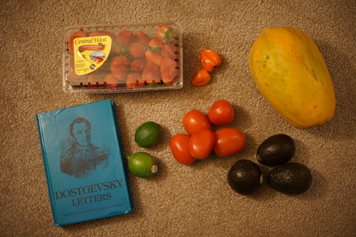
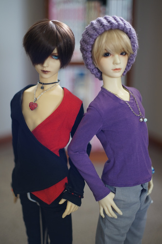

I forgot to mention the fate of the Tiny Tim plaque I was keeping in my itabag before and during Sakuracon. Edit: also forgot to finish this thought.... next blog post pls...
First haul!!! It was so exciting!!! papayayayapapayayaya
I also got to enjoy a craft fair recently!! Ryan had a grand old time with the wooden item seller. He even bought me a seam ripper!
The seller said these are blue topaz and sterling silver for $10. Uh huh. Anyway, I think they're very cute and I love the color and little bows!
yeah, I'm a sucker.
I wasn't going to buy more but this was such a good purple.
Bought more because I saw my former manager who I really like selling soap again.
He said it was made out of babinga from Argentina. Upon further research, he had no idea. This will definitely be a well used item in my collection ;_;
This is hopefully the last craft fair here that I'll attend, so when the lady who sells the knit doll hats remembered me, I decided to come back with Hina to show her. I ended up dragging Hina around for another 2 hours because I didn't want to leave her in the car. The lady at the bookstore said she was the smallest baby she'd ever seen.

I got Cheby home from Sakuracon with all his fingers and clothes, so I stripped him and threw everything in the wash (including everything but his head). I went looking for his clothes to throw them in a garment bag and couldn't find his shirt or second arm warmer. I eventually did find them in another laundry basket, but wanted to make Cheby a new shirt anyway.
I realized a couple weeks ago after making Volta's vest that my dressform had a different shoulder slope than the doll. I started patterning a blouse and got distracted by sakuracon, but I did manage to get his correct shoulder shape from draping.
I cut up one of my old favorite shirts that had become a little too worn and made a t-shirt from it. It's my least favorite part to do the neck and I always have to redo it 5 times. When will I learn just to hand sew it...
I'm considering adjusting the angle of the shoulder seam, though the fit seems fine. It could be just a tad bit longer too.
Cheby got a red x black shirt modified from the purple shirt pattern. It's looser than I expected so he's constantly having wardrobe malfunctions. I'll try his tank top on under it once it's washed.
I never feel like anything done in jersey knit is my best work. It's so hard to sew this fabric without an overlock. Please do not inspect these when you see them in person. I'm a little sad I can't give Liam a rich boy look yet, but I'll keep practicing! He'll get there.